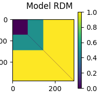
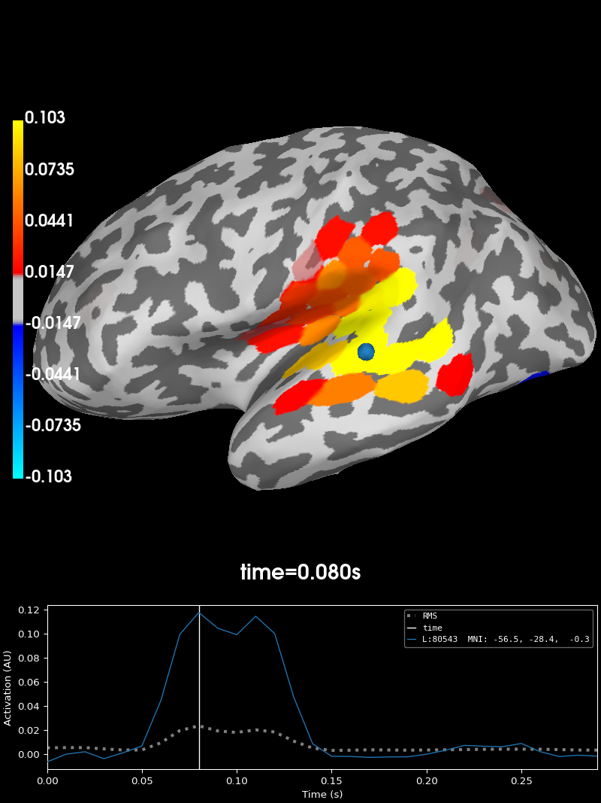
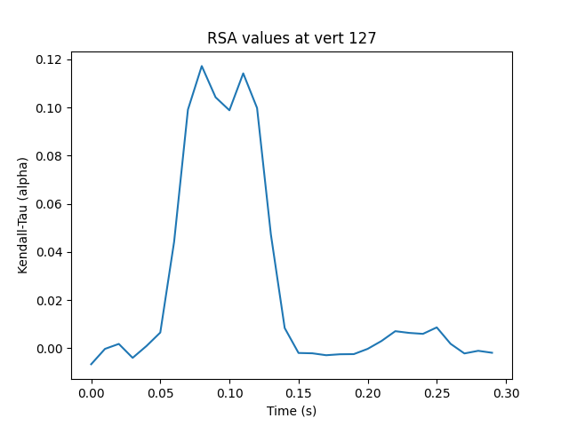

Note
Go to the end to download the full example code.
Source-level RSA using a searchlight on surface data#
This example demonstrates how to perform representational similarity analysis (RSA) on source localized MEG data, using a searchlight approach.
In the searchlight approach, representational similarity is computed between the model and searchlight “patches”. A patch is defined by a seed vertex on the cortex and all vertices within a given radius. By default, patches are created using each vertex as a seed point, so you can think of it as a “searchlight” that scans along the cortex.
The radius of a searchlight can be defined in space, in time, or both. In this example, our searchlight will have a spatial radius of 2 cm. and a temporal radius of 20 ms.
The dataset will be the MNE-sample dataset: a collection of 288 epochs in which the participant was presented with an auditory beep or visual stimulus to either the left or right ear or visual field.
# sphinx_gallery_thumbnail_number=2
import mne
import mne_rsa
# Import required packages
from matplotlib import pyplot as plt
mne.set_log_level(False) # Be less verbose
mne.viz.set_3d_backend("pyvista")
'pyvistaqt'
We’ll be using the data from the MNE-sample set. To speed up computations in this example, we’re going to use one of the sparse source spaces from the testing set.
sample_root = mne.datasets.sample.data_path(verbose=True)
testing_root = mne.datasets.testing.data_path(verbose=True)
sample_path = sample_root / "MEG" / "sample"
testing_path = testing_root / "MEG" / "sample"
subjects_dir = sample_root / "subjects"
Creating epochs from the continuous (raw) data. We downsample to 100 Hz to speed up the RSA computations later on.
raw = mne.io.read_raw_fif(sample_path / "sample_audvis_filt-0-40_raw.fif")
events = mne.read_events(sample_path / "sample_audvis_filt-0-40_raw-eve.fif")
event_id = {"audio/left": 1, "audio/right": 2, "visual/left": 3, "visual/right": 4}
epochs = mne.Epochs(raw, events, event_id, preload=True)
epochs.resample(100)
It’s important that the model RDM and the epochs are in the same order, so that each row in the model RDM will correspond to an epoch. The model RDM will be easier to interpret visually if the data is ordered such that all epochs belonging to the same experimental condition are right next to each-other, so patterns jump out. This can be achieved by first splitting the epochs by experimental condition and then concatenating them together again.
epoch_splits = [
epochs[cl] for cl in ["audio/left", "audio/right", "visual/left", "visual/right"]
]
epochs = mne.concatenate_epochs(epoch_splits)
Now that the epochs are in the proper order, we can create a RDM based on the experimental conditions. This type of RDM is referred to as a “sensitivity RDM”. Let’s create a sensitivity RDM that will pick up the left auditory response when RSA-ed against the MEG data. Since we want to capture areas where left beeps generate a large signal, we specify that left beeps should be similar to other left beeps. Since we do not want areas where visual stimuli generate a large signal, we specify that beeps must be different from visual stimuli. Furthermore, since in areas where visual stimuli generate only a small signal, random noise will dominate, we also specify that visual stimuli are different from other visual stimuli. Finally left and right auditory beeps will be somewhat similar.
def sensitivity_metric(event_id_1, event_id_2):
"""Determine similarity between two epochs, given their event ids."""
if event_id_1 == 1 and event_id_2 == 1:
return 0 # Completely similar
if event_id_1 == 2 and event_id_2 == 2:
return 0.5 # Somewhat similar
elif event_id_1 == 1 and event_id_2 == 2:
return 0.5 # Somewhat similar
elif event_id_1 == 2 and event_id_1 == 1:
return 0.5 # Somewhat similar
else:
return 1 # Not similar at all
model_rdm = mne_rsa.compute_rdm(epochs.events[:, 2], metric=sensitivity_metric)
mne_rsa.plot_rdms(model_rdm, title="Model RDM")

<Figure size 200x200 with 2 Axes>
This example is going to be on source-level, so let’s load the inverse operator and apply it to obtain a cortical surface source estimate for each epoch. To speed up the computation, we going to load an inverse operator from the testing dataset that was created using a sparse source space with not too many vertices.
inv = mne.minimum_norm.read_inverse_operator(
testing_path / "sample_audvis_trunc-meg-eeg-oct-4-meg-inv.fif"
)
epochs_stc = mne.minimum_norm.apply_inverse_epochs(epochs, inv, lambda2=0.1111)
Performing the RSA. This will take some time. Consider increasing n_jobs to
parallelize the computation across multiple CPUs.
rsa_vals = mne_rsa.rsa_stcs(
epochs_stc, # The source localized epochs
model_rdm, # The model RDM we constructed above
src=inv["src"], # The inverse operator has our source space
stc_rdm_metric="correlation", # Metric to compute the MEG RDMs
rsa_metric="kendall-tau-a", # Metric to compare model and EEG RDMs
spatial_radius=0.02, # Spatial radius of the searchlight patch
temporal_radius=0.02, # Temporal radius of the searchlight path
tmin=0,
tmax=0.3, # To save time, only analyze this time interval
n_jobs=1, # Only use one CPU core. Increase this for more speed.
verbose=True,
) # Set to True to display a progress bar
# Find the searchlight patch with highest RSA score
peak_vertex, peak_time = rsa_vals.get_peak(vert_as_index=True)
# Plot the result at the timepoint where the maximum RSA value occurs.
rsa_vals.plot("sample", subjects_dir=subjects_dir, initial_time=peak_time)

Calculating source space distances (limit=20.0 mm)...
Not adding patch information, dist_limit too small
Performing RSA between SourceEstimates and 1 model RDM(s)
Spatial radius: 0.02 meters
Using 498 vertices
Temporal radius: 2 samples
Time interval: 0-0.3 seconds
Number of searchlight patches: 14940
0%| | 0/14940 [00:00<?, ?patch/s]Creating spatio-temporal searchlight patches
0%| | 19/14940 [00:00<01:20, 184.76patch/s]
0%| | 38/14940 [00:00<01:20, 185.42patch/s]
0%| | 57/14940 [00:00<01:19, 186.10patch/s]
1%| | 76/14940 [00:00<01:19, 187.60patch/s]
1%| | 95/14940 [00:00<01:19, 187.36patch/s]
1%| | 114/14940 [00:00<01:19, 186.47patch/s]
1%| | 133/14940 [00:00<01:19, 185.55patch/s]
1%| | 152/14940 [00:00<01:19, 185.76patch/s]
1%| | 171/14940 [00:00<01:19, 185.19patch/s]
1%|▏ | 190/14940 [00:01<01:19, 186.06patch/s]
1%|▏ | 209/14940 [00:01<01:19, 186.04patch/s]
2%|▏ | 228/14940 [00:01<01:19, 185.35patch/s]
2%|▏ | 247/14940 [00:01<01:19, 185.25patch/s]
2%|▏ | 266/14940 [00:01<01:19, 184.90patch/s]
2%|▏ | 285/14940 [00:01<01:19, 184.18patch/s]
2%|▏ | 304/14940 [00:01<01:19, 183.90patch/s]
2%|▏ | 323/14940 [00:01<01:19, 184.64patch/s]
2%|▏ | 342/14940 [00:01<01:18, 185.13patch/s]
2%|▏ | 361/14940 [00:01<01:18, 186.27patch/s]
3%|▎ | 380/14940 [00:02<01:18, 185.42patch/s]
3%|▎ | 399/14940 [00:02<01:19, 183.62patch/s]
3%|▎ | 418/14940 [00:02<01:19, 182.66patch/s]
3%|▎ | 437/14940 [00:02<01:19, 183.24patch/s]
3%|▎ | 456/14940 [00:02<01:18, 184.66patch/s]
3%|▎ | 475/14940 [00:02<01:18, 185.22patch/s]
3%|▎ | 495/14940 [00:02<01:17, 186.80patch/s]
3%|▎ | 514/14940 [00:02<01:17, 187.23patch/s]
4%|▎ | 533/14940 [00:02<01:17, 186.84patch/s]
4%|▎ | 552/14940 [00:02<01:17, 186.34patch/s]
4%|▍ | 571/14940 [00:03<01:17, 185.49patch/s]
4%|▍ | 590/14940 [00:03<01:17, 185.48patch/s]
4%|▍ | 609/14940 [00:03<01:17, 185.11patch/s]
4%|▍ | 628/14940 [00:03<01:17, 185.42patch/s]
4%|▍ | 647/14940 [00:03<01:17, 185.06patch/s]
4%|▍ | 666/14940 [00:03<01:17, 184.50patch/s]
5%|▍ | 685/14940 [00:03<01:17, 183.19patch/s]
5%|▍ | 704/14940 [00:03<01:18, 182.33patch/s]
5%|▍ | 723/14940 [00:03<01:18, 182.03patch/s]
5%|▍ | 742/14940 [00:04<01:17, 184.23patch/s]
5%|▌ | 761/14940 [00:04<01:16, 184.82patch/s]
5%|▌ | 780/14940 [00:04<01:16, 184.99patch/s]
5%|▌ | 799/14940 [00:04<01:17, 182.99patch/s]
5%|▌ | 818/14940 [00:04<01:18, 180.70patch/s]
6%|▌ | 837/14940 [00:04<01:17, 181.98patch/s]
6%|▌ | 856/14940 [00:04<01:17, 182.40patch/s]
6%|▌ | 875/14940 [00:04<01:16, 182.85patch/s]
6%|▌ | 894/14940 [00:04<01:17, 181.95patch/s]
6%|▌ | 913/14940 [00:04<01:17, 181.86patch/s]
6%|▌ | 932/14940 [00:05<01:17, 180.89patch/s]
6%|▋ | 951/14940 [00:05<01:16, 182.80patch/s]
6%|▋ | 970/14940 [00:05<01:16, 182.91patch/s]
7%|▋ | 989/14940 [00:05<01:16, 183.16patch/s]
7%|▋ | 1008/14940 [00:05<01:15, 184.88patch/s]
7%|▋ | 1027/14940 [00:05<01:15, 185.10patch/s]
7%|▋ | 1046/14940 [00:05<01:15, 183.88patch/s]
7%|▋ | 1065/14940 [00:05<01:15, 184.15patch/s]
7%|▋ | 1084/14940 [00:05<01:14, 185.34patch/s]
7%|▋ | 1103/14940 [00:05<01:14, 186.21patch/s]
8%|▊ | 1122/14940 [00:06<01:14, 186.51patch/s]
8%|▊ | 1141/14940 [00:06<01:14, 185.82patch/s]
8%|▊ | 1160/14940 [00:06<01:13, 186.91patch/s]
8%|▊ | 1179/14940 [00:06<01:13, 187.49patch/s]
8%|▊ | 1199/14940 [00:06<01:12, 188.33patch/s]
8%|▊ | 1218/14940 [00:06<01:12, 188.01patch/s]
8%|▊ | 1237/14940 [00:06<01:12, 187.75patch/s]
8%|▊ | 1256/14940 [00:06<01:13, 187.00patch/s]
9%|▊ | 1275/14940 [00:06<01:13, 186.32patch/s]
9%|▊ | 1294/14940 [00:06<01:13, 186.21patch/s]
9%|▉ | 1313/14940 [00:07<01:13, 185.47patch/s]
9%|▉ | 1332/14940 [00:07<01:13, 185.39patch/s]
9%|▉ | 1351/14940 [00:07<01:13, 184.55patch/s]
9%|▉ | 1370/14940 [00:07<01:13, 185.47patch/s]
9%|▉ | 1389/14940 [00:07<01:13, 185.12patch/s]
9%|▉ | 1408/14940 [00:07<01:13, 185.01patch/s]
10%|▉ | 1427/14940 [00:07<01:13, 184.07patch/s]
10%|▉ | 1446/14940 [00:07<01:13, 182.42patch/s]
10%|▉ | 1465/14940 [00:07<01:14, 181.36patch/s]
10%|▉ | 1484/14940 [00:08<01:13, 182.51patch/s]
10%|█ | 1503/14940 [00:08<01:13, 183.58patch/s]
10%|█ | 1522/14940 [00:08<01:13, 183.03patch/s]
10%|█ | 1541/14940 [00:08<01:12, 184.03patch/s]
10%|█ | 1560/14940 [00:08<01:12, 184.68patch/s]
11%|█ | 1579/14940 [00:08<01:13, 182.03patch/s]
11%|█ | 1598/14940 [00:08<01:14, 179.96patch/s]
11%|█ | 1617/14940 [00:08<01:13, 180.24patch/s]
11%|█ | 1636/14940 [00:08<01:14, 178.65patch/s]
11%|█ | 1654/14940 [00:08<01:14, 178.22patch/s]
11%|█ | 1672/14940 [00:09<01:14, 178.66patch/s]
11%|█▏ | 1690/14940 [00:09<01:14, 177.03patch/s]
11%|█▏ | 1708/14940 [00:09<01:15, 174.69patch/s]
12%|█▏ | 1727/14940 [00:09<01:14, 176.40patch/s]
12%|█▏ | 1746/14940 [00:09<01:13, 179.27patch/s]
12%|█▏ | 1765/14940 [00:09<01:12, 181.42patch/s]
12%|█▏ | 1784/14940 [00:09<01:13, 179.83patch/s]
12%|█▏ | 1802/14940 [00:09<01:13, 177.88patch/s]
12%|█▏ | 1820/14940 [00:09<01:14, 176.38patch/s]
12%|█▏ | 1838/14940 [00:10<01:14, 176.45patch/s]
12%|█▏ | 1857/14940 [00:10<01:13, 178.34patch/s]
13%|█▎ | 1876/14940 [00:10<01:12, 180.67patch/s]
13%|█▎ | 1895/14940 [00:10<01:11, 182.20patch/s]
13%|█▎ | 1914/14940 [00:10<01:11, 182.33patch/s]
13%|█▎ | 1933/14940 [00:10<01:11, 182.30patch/s]
13%|█▎ | 1952/14940 [00:10<01:11, 182.82patch/s]
13%|█▎ | 1971/14940 [00:10<01:10, 183.27patch/s]
13%|█▎ | 1990/14940 [00:10<01:10, 183.32patch/s]
13%|█▎ | 2009/14940 [00:10<01:10, 182.79patch/s]
14%|█▎ | 2028/14940 [00:11<01:11, 181.81patch/s]
14%|█▎ | 2047/14940 [00:11<01:10, 181.95patch/s]
14%|█▍ | 2066/14940 [00:11<01:10, 183.52patch/s]
14%|█▍ | 2085/14940 [00:11<01:10, 183.43patch/s]
14%|█▍ | 2104/14940 [00:11<01:09, 184.06patch/s]
14%|█▍ | 2123/14940 [00:11<01:09, 185.03patch/s]
14%|█▍ | 2142/14940 [00:11<01:09, 184.27patch/s]
14%|█▍ | 2161/14940 [00:11<01:09, 183.19patch/s]
15%|█▍ | 2180/14940 [00:11<01:11, 178.99patch/s]
15%|█▍ | 2199/14940 [00:11<01:10, 179.58patch/s]
15%|█▍ | 2218/14940 [00:12<01:09, 182.36patch/s]
15%|█▍ | 2237/14940 [00:12<01:10, 181.43patch/s]
15%|█▌ | 2256/14940 [00:12<01:10, 180.83patch/s]
15%|█▌ | 2275/14940 [00:12<01:09, 183.05patch/s]
15%|█▌ | 2294/14940 [00:12<01:09, 181.45patch/s]
15%|█▌ | 2313/14940 [00:12<01:10, 180.26patch/s]
16%|█▌ | 2332/14940 [00:12<01:09, 181.35patch/s]
16%|█▌ | 2351/14940 [00:12<01:09, 181.94patch/s]
16%|█▌ | 2370/14940 [00:12<01:09, 180.92patch/s]
16%|█▌ | 2389/14940 [00:13<01:10, 178.75patch/s]
16%|█▌ | 2407/14940 [00:13<01:10, 177.59patch/s]
16%|█▌ | 2425/14940 [00:13<01:11, 175.03patch/s]
16%|█▋ | 2443/14940 [00:13<01:10, 176.18patch/s]
16%|█▋ | 2461/14940 [00:13<01:10, 177.25patch/s]
17%|█▋ | 2479/14940 [00:13<01:10, 177.44patch/s]
17%|█▋ | 2497/14940 [00:13<01:10, 176.12patch/s]
17%|█▋ | 2515/14940 [00:13<01:11, 173.59patch/s]
17%|█▋ | 2533/14940 [00:13<01:11, 174.59patch/s]
17%|█▋ | 2552/14940 [00:13<01:09, 177.00patch/s]
17%|█▋ | 2571/14940 [00:14<01:08, 179.56patch/s]
17%|█▋ | 2589/14940 [00:14<01:09, 178.93patch/s]
17%|█▋ | 2607/14940 [00:14<01:09, 177.29patch/s]
18%|█▊ | 2625/14940 [00:14<01:09, 177.88patch/s]
18%|█▊ | 2644/14940 [00:14<01:08, 179.21patch/s]
18%|█▊ | 2663/14940 [00:14<01:08, 180.23patch/s]
18%|█▊ | 2682/14940 [00:14<01:07, 180.62patch/s]
18%|█▊ | 2701/14940 [00:14<01:07, 180.56patch/s]
18%|█▊ | 2720/14940 [00:14<01:08, 179.68patch/s]
18%|█▊ | 2738/14940 [00:15<01:08, 178.67patch/s]
18%|█▊ | 2756/14940 [00:15<01:08, 177.33patch/s]
19%|█▊ | 2774/14940 [00:15<01:08, 176.92patch/s]
19%|█▊ | 2792/14940 [00:15<01:09, 175.60patch/s]
19%|█▉ | 2810/14940 [00:15<01:08, 176.25patch/s]
19%|█▉ | 2828/14940 [00:15<01:08, 176.48patch/s]
19%|█▉ | 2846/14940 [00:15<01:08, 176.12patch/s]
19%|█▉ | 2864/14940 [00:15<01:08, 176.57patch/s]
19%|█▉ | 2882/14940 [00:15<01:08, 176.91patch/s]
19%|█▉ | 2900/14940 [00:15<01:07, 177.18patch/s]
20%|█▉ | 2918/14940 [00:16<01:07, 177.73patch/s]
20%|█▉ | 2937/14940 [00:16<01:07, 178.88patch/s]
20%|█▉ | 2955/14940 [00:16<01:07, 178.33patch/s]
20%|█▉ | 2973/14940 [00:16<01:07, 178.32patch/s]
20%|██ | 2992/14940 [00:16<01:06, 180.03patch/s]
20%|██ | 3011/14940 [00:16<01:06, 180.46patch/s]
20%|██ | 3030/14940 [00:16<01:06, 180.03patch/s]
20%|██ | 3049/14940 [00:16<01:05, 180.79patch/s]
21%|██ | 3068/14940 [00:16<01:05, 180.85patch/s]
21%|██ | 3087/14940 [00:16<01:05, 180.51patch/s]
21%|██ | 3106/14940 [00:17<01:04, 182.46patch/s]
21%|██ | 3125/14940 [00:17<01:04, 182.31patch/s]
21%|██ | 3144/14940 [00:17<01:05, 179.96patch/s]
21%|██ | 3163/14940 [00:17<01:05, 180.41patch/s]
21%|██▏ | 3182/14940 [00:17<01:04, 181.67patch/s]
21%|██▏ | 3201/14940 [00:17<01:05, 179.57patch/s]
22%|██▏ | 3219/14940 [00:17<01:05, 178.77patch/s]
22%|██▏ | 3237/14940 [00:17<01:05, 178.92patch/s]
22%|██▏ | 3256/14940 [00:17<01:04, 179.99patch/s]
22%|██▏ | 3275/14940 [00:18<01:04, 180.57patch/s]
22%|██▏ | 3294/14940 [00:18<01:04, 181.49patch/s]
22%|██▏ | 3313/14940 [00:18<01:04, 180.88patch/s]
22%|██▏ | 3332/14940 [00:18<01:04, 179.08patch/s]
22%|██▏ | 3351/14940 [00:18<01:04, 180.13patch/s]
23%|██▎ | 3370/14940 [00:18<01:03, 180.99patch/s]
23%|██▎ | 3389/14940 [00:18<01:03, 181.88patch/s]
23%|██▎ | 3408/14940 [00:18<01:03, 182.74patch/s]
23%|██▎ | 3427/14940 [00:18<01:02, 183.19patch/s]
23%|██▎ | 3446/14940 [00:18<01:02, 183.40patch/s]
23%|██▎ | 3465/14940 [00:19<01:02, 182.81patch/s]
23%|██▎ | 3484/14940 [00:19<01:02, 182.42patch/s]
23%|██▎ | 3503/14940 [00:19<01:02, 182.44patch/s]
24%|██▎ | 3522/14940 [00:19<01:02, 183.19patch/s]
24%|██▎ | 3541/14940 [00:19<01:02, 183.47patch/s]
24%|██▍ | 3560/14940 [00:19<01:02, 183.48patch/s]
24%|██▍ | 3579/14940 [00:19<01:02, 183.22patch/s]
24%|██▍ | 3598/14940 [00:19<01:02, 182.17patch/s]
24%|██▍ | 3617/14940 [00:19<01:02, 181.96patch/s]
24%|██▍ | 3636/14940 [00:19<01:02, 180.63patch/s]
24%|██▍ | 3655/14940 [00:20<01:03, 178.68patch/s]
25%|██▍ | 3673/14940 [00:20<01:02, 179.02patch/s]
25%|██▍ | 3692/14940 [00:20<01:02, 179.97patch/s]
25%|██▍ | 3711/14940 [00:20<01:03, 177.75patch/s]
25%|██▍ | 3729/14940 [00:20<01:03, 177.37patch/s]
25%|██▌ | 3747/14940 [00:20<01:03, 177.19patch/s]
25%|██▌ | 3765/14940 [00:20<01:02, 177.52patch/s]
25%|██▌ | 3783/14940 [00:20<01:02, 177.95patch/s]
25%|██▌ | 3801/14940 [00:20<01:02, 177.45patch/s]
26%|██▌ | 3819/14940 [00:21<01:02, 177.01patch/s]
26%|██▌ | 3837/14940 [00:21<01:02, 177.00patch/s]
26%|██▌ | 3855/14940 [00:21<01:02, 176.90patch/s]
26%|██▌ | 3873/14940 [00:21<01:02, 177.14patch/s]
26%|██▌ | 3891/14940 [00:21<01:02, 176.41patch/s]
26%|██▌ | 3909/14940 [00:21<01:03, 174.89patch/s]
26%|██▋ | 3927/14940 [00:21<01:03, 173.28patch/s]
26%|██▋ | 3945/14940 [00:21<01:03, 172.02patch/s]
27%|██▋ | 3963/14940 [00:21<01:03, 173.47patch/s]
27%|██▋ | 3981/14940 [00:21<01:02, 175.18patch/s]
27%|██▋ | 4000/14940 [00:22<01:01, 177.15patch/s]
27%|██▋ | 4019/14940 [00:22<01:00, 179.71patch/s]
27%|██▋ | 4037/14940 [00:22<01:00, 179.78patch/s]
27%|██▋ | 4056/14940 [00:22<01:00, 180.83patch/s]
27%|██▋ | 4075/14940 [00:22<00:59, 182.03patch/s]
27%|██▋ | 4094/14940 [00:22<00:59, 183.16patch/s]
28%|██▊ | 4113/14940 [00:22<00:59, 183.24patch/s]
28%|██▊ | 4132/14940 [00:22<00:58, 183.78patch/s]
28%|██▊ | 4151/14940 [00:22<00:58, 183.50patch/s]
28%|██▊ | 4170/14940 [00:22<00:59, 182.43patch/s]
28%|██▊ | 4189/14940 [00:23<00:58, 182.90patch/s]
28%|██▊ | 4208/14940 [00:23<00:58, 183.17patch/s]
28%|██▊ | 4227/14940 [00:23<00:58, 183.95patch/s]
28%|██▊ | 4246/14940 [00:23<00:58, 183.67patch/s]
29%|██▊ | 4265/14940 [00:23<00:58, 183.24patch/s]
29%|██▊ | 4284/14940 [00:23<00:58, 180.84patch/s]
29%|██▉ | 4303/14940 [00:23<00:58, 181.64patch/s]
29%|██▉ | 4322/14940 [00:23<00:58, 183.01patch/s]
29%|██▉ | 4341/14940 [00:23<00:58, 180.79patch/s]
29%|██▉ | 4360/14940 [00:24<00:58, 179.98patch/s]
29%|██▉ | 4379/14940 [00:24<00:58, 179.31patch/s]
29%|██▉ | 4398/14940 [00:24<00:57, 181.86patch/s]
30%|██▉ | 4417/14940 [00:24<00:57, 183.23patch/s]
30%|██▉ | 4436/14940 [00:24<00:57, 184.01patch/s]
30%|██▉ | 4455/14940 [00:24<00:56, 184.31patch/s]
30%|██▉ | 4474/14940 [00:24<00:56, 184.72patch/s]
30%|███ | 4493/14940 [00:24<00:56, 184.61patch/s]
30%|███ | 4512/14940 [00:24<00:56, 185.55patch/s]
30%|███ | 4531/14940 [00:24<00:55, 186.00patch/s]
30%|███ | 4550/14940 [00:25<00:56, 183.09patch/s]
31%|███ | 4569/14940 [00:25<00:57, 181.75patch/s]
31%|███ | 4588/14940 [00:25<00:56, 182.36patch/s]
31%|███ | 4607/14940 [00:25<00:56, 182.79patch/s]
31%|███ | 4626/14940 [00:25<00:56, 183.11patch/s]
31%|███ | 4645/14940 [00:25<00:56, 183.80patch/s]
31%|███ | 4664/14940 [00:25<00:55, 184.20patch/s]
31%|███▏ | 4683/14940 [00:25<00:55, 184.45patch/s]
31%|███▏ | 4702/14940 [00:25<00:55, 183.20patch/s]
32%|███▏ | 4721/14940 [00:25<00:56, 182.13patch/s]
32%|███▏ | 4740/14940 [00:26<00:56, 180.36patch/s]
32%|███▏ | 4759/14940 [00:26<00:56, 181.08patch/s]
32%|███▏ | 4778/14940 [00:26<00:55, 182.11patch/s]
32%|███▏ | 4797/14940 [00:26<00:55, 184.04patch/s]
32%|███▏ | 4816/14940 [00:26<00:54, 184.70patch/s]
32%|███▏ | 4835/14940 [00:26<00:54, 184.15patch/s]
32%|███▏ | 4854/14940 [00:26<00:55, 182.42patch/s]
33%|███▎ | 4873/14940 [00:26<00:55, 182.99patch/s]
33%|███▎ | 4892/14940 [00:26<00:54, 184.97patch/s]
33%|███▎ | 4911/14940 [00:27<00:54, 185.35patch/s]
33%|███▎ | 4930/14940 [00:27<00:53, 185.92patch/s]
33%|███▎ | 4949/14940 [00:27<00:53, 185.31patch/s]
33%|███▎ | 4968/14940 [00:27<00:53, 185.30patch/s]
33%|███▎ | 4987/14940 [00:27<00:53, 185.22patch/s]
34%|███▎ | 5006/14940 [00:27<00:53, 185.38patch/s]
34%|███▎ | 5025/14940 [00:27<00:53, 184.99patch/s]
34%|███▍ | 5044/14940 [00:27<00:53, 184.38patch/s]
34%|███▍ | 5063/14940 [00:27<00:53, 184.59patch/s]
34%|███▍ | 5082/14940 [00:27<00:53, 184.24patch/s]
34%|███▍ | 5101/14940 [00:28<00:53, 185.09patch/s]
34%|███▍ | 5120/14940 [00:28<00:53, 183.80patch/s]
34%|███▍ | 5139/14940 [00:28<00:53, 184.36patch/s]
35%|███▍ | 5159/14940 [00:28<00:52, 186.13patch/s]
35%|███▍ | 5178/14940 [00:28<00:52, 184.61patch/s]
35%|███▍ | 5197/14940 [00:28<00:52, 184.22patch/s]
35%|███▍ | 5216/14940 [00:28<00:52, 184.30patch/s]
35%|███▌ | 5235/14940 [00:28<00:52, 184.63patch/s]
35%|███▌ | 5254/14940 [00:28<00:52, 184.73patch/s]
35%|███▌ | 5273/14940 [00:28<00:52, 185.16patch/s]
35%|███▌ | 5292/14940 [00:29<00:51, 185.62patch/s]
36%|███▌ | 5311/14940 [00:29<00:51, 186.32patch/s]
36%|███▌ | 5330/14940 [00:29<00:52, 184.23patch/s]
36%|███▌ | 5349/14940 [00:29<00:52, 184.14patch/s]
36%|███▌ | 5368/14940 [00:29<00:51, 185.07patch/s]
36%|███▌ | 5387/14940 [00:29<00:51, 186.13patch/s]
36%|███▌ | 5406/14940 [00:29<00:50, 186.99patch/s]
36%|███▋ | 5425/14940 [00:29<00:51, 185.01patch/s]
36%|███▋ | 5444/14940 [00:29<00:51, 183.75patch/s]
37%|███▋ | 5463/14940 [00:30<00:51, 182.74patch/s]
37%|███▋ | 5482/14940 [00:30<00:51, 182.07patch/s]
37%|███▋ | 5501/14940 [00:30<00:52, 180.59patch/s]
37%|███▋ | 5520/14940 [00:30<00:52, 178.68patch/s]
37%|███▋ | 5539/14940 [00:30<00:51, 181.17patch/s]
37%|███▋ | 5558/14940 [00:30<00:51, 182.63patch/s]
37%|███▋ | 5577/14940 [00:30<00:51, 183.35patch/s]
37%|███▋ | 5596/14940 [00:30<00:50, 184.24patch/s]
38%|███▊ | 5615/14940 [00:30<00:50, 185.62patch/s]
38%|███▊ | 5634/14940 [00:30<00:49, 186.30patch/s]
38%|███▊ | 5653/14940 [00:31<00:49, 186.28patch/s]
38%|███▊ | 5672/14940 [00:31<00:50, 185.17patch/s]
38%|███▊ | 5691/14940 [00:31<00:50, 184.62patch/s]
38%|███▊ | 5710/14940 [00:31<00:49, 185.35patch/s]
38%|███▊ | 5729/14940 [00:31<00:49, 186.47patch/s]
38%|███▊ | 5748/14940 [00:31<00:49, 186.95patch/s]
39%|███▊ | 5767/14940 [00:31<00:49, 187.18patch/s]
39%|███▊ | 5786/14940 [00:31<00:48, 187.94patch/s]
39%|███▉ | 5805/14940 [00:31<00:48, 186.98patch/s]
39%|███▉ | 5824/14940 [00:31<00:48, 186.81patch/s]
39%|███▉ | 5843/14940 [00:32<00:48, 187.13patch/s]
39%|███▉ | 5862/14940 [00:32<00:48, 187.63patch/s]
39%|███▉ | 5881/14940 [00:32<00:48, 187.05patch/s]
39%|███▉ | 5900/14940 [00:32<00:48, 185.19patch/s]
40%|███▉ | 5919/14940 [00:32<00:49, 184.10patch/s]
40%|███▉ | 5938/14940 [00:32<00:49, 183.55patch/s]
40%|███▉ | 5957/14940 [00:32<00:48, 183.65patch/s]
40%|████ | 5976/14940 [00:32<00:49, 182.42patch/s]
40%|████ | 5995/14940 [00:32<00:49, 182.10patch/s]
40%|████ | 6014/14940 [00:32<00:49, 181.69patch/s]
40%|████ | 6033/14940 [00:33<00:48, 182.49patch/s]
41%|████ | 6052/14940 [00:33<00:48, 183.32patch/s]
41%|████ | 6071/14940 [00:33<00:48, 183.08patch/s]
41%|████ | 6090/14940 [00:33<00:48, 181.15patch/s]
41%|████ | 6109/14940 [00:33<00:48, 182.68patch/s]
41%|████ | 6128/14940 [00:33<00:47, 184.42patch/s]
41%|████ | 6147/14940 [00:33<00:47, 185.70patch/s]
41%|████▏ | 6166/14940 [00:33<00:47, 185.16patch/s]
41%|████▏ | 6185/14940 [00:33<00:47, 185.24patch/s]
42%|████▏ | 6204/14940 [00:34<00:46, 186.32patch/s]
42%|████▏ | 6223/14940 [00:34<00:47, 184.71patch/s]
42%|████▏ | 6242/14940 [00:34<00:47, 184.51patch/s]
42%|████▏ | 6261/14940 [00:34<00:46, 185.52patch/s]
42%|████▏ | 6280/14940 [00:34<00:46, 184.88patch/s]
42%|████▏ | 6299/14940 [00:34<00:46, 184.47patch/s]
42%|████▏ | 6318/14940 [00:34<00:46, 185.50patch/s]
42%|████▏ | 6337/14940 [00:34<00:46, 184.98patch/s]
43%|████▎ | 6356/14940 [00:34<00:46, 184.58patch/s]
43%|████▎ | 6375/14940 [00:34<00:46, 185.45patch/s]
43%|████▎ | 6394/14940 [00:35<00:46, 184.78patch/s]
43%|████▎ | 6413/14940 [00:35<00:45, 186.16patch/s]
43%|████▎ | 6432/14940 [00:35<00:45, 185.32patch/s]
43%|████▎ | 6451/14940 [00:35<00:46, 184.54patch/s]
43%|████▎ | 6470/14940 [00:35<00:45, 186.04patch/s]
43%|████▎ | 6490/14940 [00:35<00:45, 187.32patch/s]
44%|████▎ | 6509/14940 [00:35<00:45, 186.43patch/s]
44%|████▎ | 6528/14940 [00:35<00:45, 183.42patch/s]
44%|████▍ | 6547/14940 [00:35<00:46, 182.22patch/s]
44%|████▍ | 6566/14940 [00:35<00:46, 181.39patch/s]
44%|████▍ | 6585/14940 [00:36<00:46, 181.52patch/s]
44%|████▍ | 6604/14940 [00:36<00:45, 181.81patch/s]
44%|████▍ | 6623/14940 [00:36<00:45, 181.20patch/s]
44%|████▍ | 6642/14940 [00:36<00:45, 181.41patch/s]
45%|████▍ | 6661/14940 [00:36<00:45, 180.87patch/s]
45%|████▍ | 6680/14940 [00:36<00:45, 181.28patch/s]
45%|████▍ | 6699/14940 [00:36<00:45, 182.00patch/s]
45%|████▍ | 6718/14940 [00:36<00:44, 183.12patch/s]
45%|████▌ | 6737/14940 [00:36<00:44, 184.17patch/s]
45%|████▌ | 6756/14940 [00:37<00:44, 185.32patch/s]
45%|████▌ | 6775/14940 [00:37<00:43, 186.00patch/s]
45%|████▌ | 6794/14940 [00:37<00:43, 186.61patch/s]
46%|████▌ | 6813/14940 [00:37<00:43, 186.83patch/s]
46%|████▌ | 6832/14940 [00:37<00:43, 187.63patch/s]
46%|████▌ | 6851/14940 [00:37<00:43, 187.97patch/s]
46%|████▌ | 6870/14940 [00:37<00:42, 187.76patch/s]
46%|████▌ | 6889/14940 [00:37<00:42, 187.80patch/s]
46%|████▌ | 6908/14940 [00:37<00:42, 187.44patch/s]
46%|████▋ | 6927/14940 [00:37<00:42, 187.38patch/s]
46%|████▋ | 6946/14940 [00:38<00:42, 187.99patch/s]
47%|████▋ | 6965/14940 [00:38<00:42, 187.99patch/s]
47%|████▋ | 6984/14940 [00:38<00:42, 187.07patch/s]
47%|████▋ | 7003/14940 [00:38<00:42, 186.91patch/s]
47%|████▋ | 7022/14940 [00:38<00:42, 187.14patch/s]
47%|████▋ | 7041/14940 [00:38<00:42, 185.45patch/s]
47%|████▋ | 7060/14940 [00:38<00:42, 185.12patch/s]
47%|████▋ | 7079/14940 [00:38<00:42, 184.46patch/s]
48%|████▊ | 7098/14940 [00:38<00:42, 185.57patch/s]
48%|████▊ | 7117/14940 [00:38<00:41, 186.67patch/s]
48%|████▊ | 7136/14940 [00:39<00:41, 187.40patch/s]
48%|████▊ | 7155/14940 [00:39<00:41, 187.79patch/s]
48%|████▊ | 7174/14940 [00:39<00:41, 187.42patch/s]
48%|████▊ | 7193/14940 [00:39<00:41, 186.12patch/s]
48%|████▊ | 7212/14940 [00:39<00:41, 186.10patch/s]
48%|████▊ | 7231/14940 [00:39<00:41, 185.91patch/s]
49%|████▊ | 7250/14940 [00:39<00:41, 186.51patch/s]
49%|████▊ | 7269/14940 [00:39<00:41, 186.82patch/s]
49%|████▉ | 7288/14940 [00:39<00:41, 186.61patch/s]
49%|████▉ | 7307/14940 [00:39<00:41, 185.92patch/s]
49%|████▉ | 7326/14940 [00:40<00:40, 185.92patch/s]
49%|████▉ | 7345/14940 [00:40<00:40, 186.05patch/s]
49%|████▉ | 7364/14940 [00:40<00:41, 183.33patch/s]
49%|████▉ | 7383/14940 [00:40<00:41, 183.81patch/s]
50%|████▉ | 7402/14940 [00:40<00:40, 184.44patch/s]
50%|████▉ | 7421/14940 [00:40<00:40, 184.24patch/s]
50%|████▉ | 7440/14940 [00:40<00:40, 183.72patch/s]
50%|████▉ | 7459/14940 [00:40<00:40, 184.12patch/s]
50%|█████ | 7478/14940 [00:40<00:40, 183.55patch/s]
50%|█████ | 7497/14940 [00:41<00:40, 184.49patch/s]
50%|█████ | 7516/14940 [00:41<00:40, 185.49patch/s]
50%|█████ | 7535/14940 [00:41<00:39, 186.32patch/s]
51%|█████ | 7554/14940 [00:41<00:39, 186.59patch/s]
51%|█████ | 7573/14940 [00:41<00:39, 185.81patch/s]
51%|█████ | 7592/14940 [00:41<00:39, 185.51patch/s]
51%|█████ | 7611/14940 [00:41<00:39, 185.25patch/s]
51%|█████ | 7630/14940 [00:41<00:39, 185.16patch/s]
51%|█████ | 7649/14940 [00:41<00:39, 185.80patch/s]
51%|█████▏ | 7668/14940 [00:41<00:39, 185.89patch/s]
51%|█████▏ | 7687/14940 [00:42<00:39, 185.88patch/s]
52%|█████▏ | 7706/14940 [00:42<00:39, 185.29patch/s]
52%|█████▏ | 7725/14940 [00:42<00:39, 184.79patch/s]
52%|█████▏ | 7744/14940 [00:42<00:39, 184.09patch/s]
52%|█████▏ | 7763/14940 [00:42<00:38, 184.74patch/s]
52%|█████▏ | 7782/14940 [00:42<00:38, 184.80patch/s]
52%|█████▏ | 7801/14940 [00:42<00:38, 184.51patch/s]
52%|█████▏ | 7820/14940 [00:42<00:38, 185.44patch/s]
52%|█████▏ | 7839/14940 [00:42<00:38, 184.16patch/s]
53%|█████▎ | 7858/14940 [00:42<00:38, 183.09patch/s]
53%|█████▎ | 7877/14940 [00:43<00:38, 183.63patch/s]
53%|█████▎ | 7896/14940 [00:43<00:38, 184.45patch/s]
53%|█████▎ | 7915/14940 [00:43<00:37, 185.75patch/s]
53%|█████▎ | 7934/14940 [00:43<00:37, 185.37patch/s]
53%|█████▎ | 7953/14940 [00:43<00:37, 184.95patch/s]
53%|█████▎ | 7972/14940 [00:43<00:37, 184.09patch/s]
53%|█████▎ | 7991/14940 [00:43<00:37, 183.59patch/s]
54%|█████▎ | 8010/14940 [00:43<00:37, 183.24patch/s]
54%|█████▎ | 8029/14940 [00:43<00:37, 183.89patch/s]
54%|█████▍ | 8048/14940 [00:43<00:37, 183.49patch/s]
54%|█████▍ | 8067/14940 [00:44<00:37, 183.00patch/s]
54%|█████▍ | 8086/14940 [00:44<00:37, 181.73patch/s]
54%|█████▍ | 8105/14940 [00:44<00:37, 181.31patch/s]
54%|█████▍ | 8124/14940 [00:44<00:37, 182.31patch/s]
55%|█████▍ | 8143/14940 [00:44<00:37, 183.39patch/s]
55%|█████▍ | 8162/14940 [00:44<00:36, 184.61patch/s]
55%|█████▍ | 8181/14940 [00:44<00:36, 184.08patch/s]
55%|█████▍ | 8200/14940 [00:44<00:36, 182.95patch/s]
55%|█████▌ | 8219/14940 [00:44<00:37, 181.54patch/s]
55%|█████▌ | 8238/14940 [00:45<00:36, 181.73patch/s]
55%|█████▌ | 8257/14940 [00:45<00:36, 181.94patch/s]
55%|█████▌ | 8276/14940 [00:45<00:36, 181.20patch/s]
56%|█████▌ | 8295/14940 [00:45<00:36, 182.75patch/s]
56%|█████▌ | 8314/14940 [00:45<00:35, 184.39patch/s]
56%|█████▌ | 8333/14940 [00:45<00:35, 185.82patch/s]
56%|█████▌ | 8352/14940 [00:45<00:35, 186.20patch/s]
56%|█████▌ | 8371/14940 [00:45<00:35, 186.62patch/s]
56%|█████▌ | 8390/14940 [00:45<00:35, 186.98patch/s]
56%|█████▋ | 8409/14940 [00:45<00:34, 187.08patch/s]
56%|█████▋ | 8428/14940 [00:46<00:34, 186.70patch/s]
57%|█████▋ | 8447/14940 [00:46<00:34, 185.52patch/s]
57%|█████▋ | 8466/14940 [00:46<00:34, 184.99patch/s]
57%|█████▋ | 8485/14940 [00:46<00:34, 185.23patch/s]
57%|█████▋ | 8504/14940 [00:46<00:34, 185.17patch/s]
57%|█████▋ | 8523/14940 [00:46<00:35, 182.61patch/s]
57%|█████▋ | 8542/14940 [00:46<00:35, 177.79patch/s]
57%|█████▋ | 8560/14940 [00:46<00:35, 178.14patch/s]
57%|█████▋ | 8579/14940 [00:46<00:35, 178.99patch/s]
58%|█████▊ | 8597/14940 [00:46<00:35, 178.58patch/s]
58%|█████▊ | 8616/14940 [00:47<00:35, 179.12patch/s]
58%|█████▊ | 8635/14940 [00:47<00:34, 180.66patch/s]
58%|█████▊ | 8654/14940 [00:47<00:34, 181.52patch/s]
58%|█████▊ | 8673/14940 [00:47<00:34, 182.44patch/s]
58%|█████▊ | 8692/14940 [00:47<00:33, 184.41patch/s]
58%|█████▊ | 8711/14940 [00:47<00:33, 184.60patch/s]
58%|█████▊ | 8730/14940 [00:47<00:33, 184.25patch/s]
59%|█████▊ | 8749/14940 [00:47<00:33, 183.36patch/s]
59%|█████▊ | 8768/14940 [00:47<00:33, 183.17patch/s]
59%|█████▉ | 8787/14940 [00:48<00:33, 183.24patch/s]
59%|█████▉ | 8806/14940 [00:48<00:33, 183.71patch/s]
59%|█████▉ | 8825/14940 [00:48<00:33, 184.16patch/s]
59%|█████▉ | 8844/14940 [00:48<00:32, 185.44patch/s]
59%|█████▉ | 8863/14940 [00:48<00:32, 185.85patch/s]
59%|█████▉ | 8882/14940 [00:48<00:32, 185.27patch/s]
60%|█████▉ | 8901/14940 [00:48<00:32, 183.24patch/s]
60%|█████▉ | 8920/14940 [00:48<00:33, 182.26patch/s]
60%|█████▉ | 8939/14940 [00:48<00:33, 181.78patch/s]
60%|█████▉ | 8958/14940 [00:48<00:32, 183.48patch/s]
60%|██████ | 8977/14940 [00:49<00:32, 184.63patch/s]
60%|██████ | 8996/14940 [00:49<00:32, 185.31patch/s]
60%|██████ | 9015/14940 [00:49<00:31, 185.50patch/s]
60%|██████ | 9034/14940 [00:49<00:31, 185.66patch/s]
61%|██████ | 9053/14940 [00:49<00:31, 186.57patch/s]
61%|██████ | 9072/14940 [00:49<00:31, 186.28patch/s]
61%|██████ | 9091/14940 [00:49<00:31, 185.62patch/s]
61%|██████ | 9110/14940 [00:49<00:31, 184.11patch/s]
61%|██████ | 9129/14940 [00:49<00:31, 183.81patch/s]
61%|██████ | 9148/14940 [00:49<00:31, 183.52patch/s]
61%|██████▏ | 9167/14940 [00:50<00:32, 180.22patch/s]
61%|██████▏ | 9186/14940 [00:50<00:32, 178.65patch/s]
62%|██████▏ | 9205/14940 [00:50<00:32, 179.13patch/s]
62%|██████▏ | 9224/14940 [00:50<00:31, 181.42patch/s]
62%|██████▏ | 9243/14940 [00:50<00:31, 182.87patch/s]
62%|██████▏ | 9262/14940 [00:50<00:31, 182.94patch/s]
62%|██████▏ | 9281/14940 [00:50<00:30, 183.43patch/s]
62%|██████▏ | 9300/14940 [00:50<00:30, 183.48patch/s]
62%|██████▏ | 9319/14940 [00:50<00:30, 181.89patch/s]
63%|██████▎ | 9338/14940 [00:51<00:30, 182.24patch/s]
63%|██████▎ | 9358/14940 [00:51<00:30, 184.63patch/s]
63%|██████▎ | 9377/14940 [00:51<00:30, 185.08patch/s]
63%|██████▎ | 9396/14940 [00:51<00:30, 183.72patch/s]
63%|██████▎ | 9415/14940 [00:51<00:30, 183.59patch/s]
63%|██████▎ | 9434/14940 [00:51<00:29, 184.26patch/s]
63%|██████▎ | 9453/14940 [00:51<00:29, 185.27patch/s]
63%|██████▎ | 9472/14940 [00:51<00:29, 184.05patch/s]
64%|██████▎ | 9491/14940 [00:51<00:30, 180.34patch/s]
64%|██████▎ | 9510/14940 [00:51<00:30, 176.41patch/s]
64%|██████▍ | 9528/14940 [00:52<00:30, 177.15patch/s]
64%|██████▍ | 9546/14940 [00:52<00:30, 177.30patch/s]
64%|██████▍ | 9564/14940 [00:52<00:30, 177.71patch/s]
64%|██████▍ | 9583/14940 [00:52<00:29, 179.05patch/s]
64%|██████▍ | 9602/14940 [00:52<00:29, 180.71patch/s]
64%|██████▍ | 9621/14940 [00:52<00:29, 181.82patch/s]
65%|██████▍ | 9640/14940 [00:52<00:29, 181.94patch/s]
65%|██████▍ | 9659/14940 [00:52<00:29, 181.97patch/s]
65%|██████▍ | 9678/14940 [00:52<00:29, 181.34patch/s]
65%|██████▍ | 9697/14940 [00:53<00:29, 179.96patch/s]
65%|██████▌ | 9716/14940 [00:53<00:29, 178.27patch/s]
65%|██████▌ | 9734/14940 [00:53<00:29, 177.36patch/s]
65%|██████▌ | 9752/14940 [00:53<00:29, 176.48patch/s]
65%|██████▌ | 9771/14940 [00:53<00:28, 179.85patch/s]
66%|██████▌ | 9790/14940 [00:53<00:28, 180.60patch/s]
66%|██████▌ | 9809/14940 [00:53<00:28, 180.96patch/s]
66%|██████▌ | 9828/14940 [00:53<00:28, 181.64patch/s]
66%|██████▌ | 9847/14940 [00:53<00:27, 182.08patch/s]
66%|██████▌ | 9866/14940 [00:53<00:27, 183.01patch/s]
66%|██████▌ | 9885/14940 [00:54<00:27, 184.81patch/s]
66%|██████▋ | 9904/14940 [00:54<00:27, 186.03patch/s]
66%|██████▋ | 9923/14940 [00:54<00:26, 186.67patch/s]
67%|██████▋ | 9942/14940 [00:54<00:27, 184.50patch/s]
67%|██████▋ | 9961/14940 [00:54<00:27, 181.37patch/s]
67%|██████▋ | 9980/14940 [00:54<00:27, 182.16patch/s]
67%|██████▋ | 9999/14940 [00:54<00:27, 182.85patch/s]
67%|██████▋ | 10018/14940 [00:54<00:26, 183.11patch/s]
67%|██████▋ | 10037/14940 [00:54<00:26, 182.97patch/s]
67%|██████▋ | 10056/14940 [00:54<00:26, 183.18patch/s]
67%|██████▋ | 10075/14940 [00:55<00:26, 183.34patch/s]
68%|██████▊ | 10094/14940 [00:55<00:26, 181.78patch/s]
68%|██████▊ | 10113/14940 [00:55<00:26, 180.50patch/s]
68%|██████▊ | 10132/14940 [00:55<00:26, 178.59patch/s]
68%|██████▊ | 10150/14940 [00:55<00:26, 178.79patch/s]
68%|██████▊ | 10169/14940 [00:55<00:26, 180.70patch/s]
68%|██████▊ | 10188/14940 [00:55<00:26, 182.44patch/s]
68%|██████▊ | 10207/14940 [00:55<00:25, 183.28patch/s]
68%|██████▊ | 10226/14940 [00:55<00:25, 183.74patch/s]
69%|██████▊ | 10245/14940 [00:56<00:25, 181.53patch/s]
69%|██████▊ | 10264/14940 [00:56<00:26, 178.51patch/s]
69%|██████▉ | 10282/14940 [00:56<00:26, 177.91patch/s]
69%|██████▉ | 10300/14940 [00:56<00:26, 176.31patch/s]
69%|██████▉ | 10319/14940 [00:56<00:26, 177.51patch/s]
69%|██████▉ | 10337/14940 [00:56<00:26, 177.01patch/s]
69%|██████▉ | 10355/14940 [00:56<00:26, 176.01patch/s]
69%|██████▉ | 10374/14940 [00:56<00:25, 178.26patch/s]
70%|██████▉ | 10393/14940 [00:56<00:25, 179.27patch/s]
70%|██████▉ | 10412/14940 [00:56<00:25, 180.63patch/s]
70%|██████▉ | 10431/14940 [00:57<00:24, 181.97patch/s]
70%|██████▉ | 10450/14940 [00:57<00:24, 182.20patch/s]
70%|███████ | 10469/14940 [00:57<00:24, 184.29patch/s]
70%|███████ | 10488/14940 [00:57<00:24, 180.93patch/s]
70%|███████ | 10507/14940 [00:57<00:24, 179.31patch/s]
70%|███████ | 10525/14940 [00:57<00:24, 178.69patch/s]
71%|███████ | 10544/14940 [00:57<00:24, 180.03patch/s]
71%|███████ | 10563/14940 [00:57<00:24, 181.25patch/s]
71%|███████ | 10582/14940 [00:57<00:24, 181.50patch/s]
71%|███████ | 10601/14940 [00:58<00:24, 180.60patch/s]
71%|███████ | 10620/14940 [00:58<00:23, 180.03patch/s]
71%|███████ | 10639/14940 [00:58<00:23, 180.78patch/s]
71%|███████▏ | 10658/14940 [00:58<00:23, 180.82patch/s]
71%|███████▏ | 10677/14940 [00:58<00:23, 179.64patch/s]
72%|███████▏ | 10696/14940 [00:58<00:23, 180.39patch/s]
72%|███████▏ | 10715/14940 [00:58<00:23, 180.12patch/s]
72%|███████▏ | 10734/14940 [00:58<00:23, 178.37patch/s]
72%|███████▏ | 10752/14940 [00:58<00:23, 177.42patch/s]
72%|███████▏ | 10770/14940 [00:58<00:23, 176.55patch/s]
72%|███████▏ | 10788/14940 [00:59<00:23, 176.47patch/s]
72%|███████▏ | 10806/14940 [00:59<00:23, 176.22patch/s]
72%|███████▏ | 10825/14940 [00:59<00:23, 177.74patch/s]
73%|███████▎ | 10844/14940 [00:59<00:22, 178.57patch/s]
73%|███████▎ | 10863/14940 [00:59<00:22, 180.76patch/s]
73%|███████▎ | 10882/14940 [00:59<00:22, 181.89patch/s]
73%|███████▎ | 10901/14940 [00:59<00:22, 183.04patch/s]
73%|███████▎ | 10920/14940 [00:59<00:21, 183.17patch/s]
73%|███████▎ | 10939/14940 [00:59<00:21, 182.22patch/s]
73%|███████▎ | 10958/14940 [00:59<00:21, 181.57patch/s]
73%|███████▎ | 10977/14940 [01:00<00:21, 180.98patch/s]
74%|███████▎ | 10996/14940 [01:00<00:21, 181.31patch/s]
74%|███████▎ | 11015/14940 [01:00<00:21, 180.97patch/s]
74%|███████▍ | 11034/14940 [01:00<00:21, 179.50patch/s]
74%|███████▍ | 11052/14940 [01:00<00:21, 178.61patch/s]
74%|███████▍ | 11070/14940 [01:00<00:21, 178.02patch/s]
74%|███████▍ | 11089/14940 [01:00<00:21, 180.51patch/s]
74%|███████▍ | 11108/14940 [01:00<00:21, 182.33patch/s]
74%|███████▍ | 11127/14940 [01:00<00:20, 182.05patch/s]
75%|███████▍ | 11146/14940 [01:01<00:20, 180.81patch/s]
75%|███████▍ | 11165/14940 [01:01<00:20, 181.20patch/s]
75%|███████▍ | 11184/14940 [01:01<00:20, 181.66patch/s]
75%|███████▍ | 11203/14940 [01:01<00:20, 182.94patch/s]
75%|███████▌ | 11222/14940 [01:01<00:20, 182.86patch/s]
75%|███████▌ | 11241/14940 [01:01<00:20, 182.79patch/s]
75%|███████▌ | 11260/14940 [01:01<00:20, 182.56patch/s]
75%|███████▌ | 11279/14940 [01:01<00:20, 182.00patch/s]
76%|███████▌ | 11298/14940 [01:01<00:20, 180.88patch/s]
76%|███████▌ | 11317/14940 [01:01<00:19, 181.27patch/s]
76%|███████▌ | 11336/14940 [01:02<00:19, 182.02patch/s]
76%|███████▌ | 11355/14940 [01:02<00:19, 183.12patch/s]
76%|███████▌ | 11374/14940 [01:02<00:19, 183.37patch/s]
76%|███████▋ | 11393/14940 [01:02<00:19, 181.35patch/s]
76%|███████▋ | 11412/14940 [01:02<00:19, 181.47patch/s]
77%|███████▋ | 11431/14940 [01:02<00:19, 182.29patch/s]
77%|███████▋ | 11450/14940 [01:02<00:19, 183.14patch/s]
77%|███████▋ | 11469/14940 [01:02<00:18, 182.74patch/s]
77%|███████▋ | 11488/14940 [01:02<00:19, 181.36patch/s]
77%|███████▋ | 11507/14940 [01:03<00:19, 180.15patch/s]
77%|███████▋ | 11526/14940 [01:03<00:19, 178.97patch/s]
77%|███████▋ | 11544/14940 [01:03<00:19, 177.10patch/s]
77%|███████▋ | 11562/14940 [01:03<00:19, 177.05patch/s]
78%|███████▊ | 11580/14940 [01:03<00:18, 177.32patch/s]
78%|███████▊ | 11598/14940 [01:03<00:18, 177.05patch/s]
78%|███████▊ | 11616/14940 [01:03<00:18, 177.61patch/s]
78%|███████▊ | 11635/14940 [01:03<00:18, 179.18patch/s]
78%|███████▊ | 11654/14940 [01:03<00:18, 180.93patch/s]
78%|███████▊ | 11673/14940 [01:03<00:17, 181.97patch/s]
78%|███████▊ | 11692/14940 [01:04<00:17, 183.08patch/s]
78%|███████▊ | 11711/14940 [01:04<00:17, 182.01patch/s]
79%|███████▊ | 11730/14940 [01:04<00:17, 180.83patch/s]
79%|███████▊ | 11749/14940 [01:04<00:17, 181.62patch/s]
79%|███████▉ | 11768/14940 [01:04<00:17, 182.73patch/s]
79%|███████▉ | 11787/14940 [01:04<00:17, 182.97patch/s]
79%|███████▉ | 11806/14940 [01:04<00:17, 183.79patch/s]
79%|███████▉ | 11825/14940 [01:04<00:16, 183.76patch/s]
79%|███████▉ | 11844/14940 [01:04<00:16, 182.93patch/s]
79%|███████▉ | 11863/14940 [01:04<00:16, 183.64patch/s]
80%|███████▉ | 11882/14940 [01:05<00:16, 185.03patch/s]
80%|███████▉ | 11901/14940 [01:05<00:16, 185.05patch/s]
80%|███████▉ | 11920/14940 [01:05<00:16, 184.96patch/s]
80%|███████▉ | 11939/14940 [01:05<00:16, 185.18patch/s]
80%|████████ | 11958/14940 [01:05<00:16, 185.87patch/s]
80%|████████ | 11977/14940 [01:05<00:15, 186.08patch/s]
80%|████████ | 11996/14940 [01:05<00:15, 185.12patch/s]
80%|████████ | 12015/14940 [01:05<00:15, 185.50patch/s]
81%|████████ | 12034/14940 [01:05<00:15, 185.60patch/s]
81%|████████ | 12053/14940 [01:06<00:15, 185.39patch/s]
81%|████████ | 12072/14940 [01:06<00:15, 185.17patch/s]
81%|████████ | 12091/14940 [01:06<00:15, 185.31patch/s]
81%|████████ | 12110/14940 [01:06<00:15, 185.09patch/s]
81%|████████ | 12129/14940 [01:06<00:15, 185.21patch/s]
81%|████████▏ | 12148/14940 [01:06<00:15, 185.39patch/s]
81%|████████▏ | 12167/14940 [01:06<00:15, 183.24patch/s]
82%|████████▏ | 12186/14940 [01:06<00:15, 181.91patch/s]
82%|████████▏ | 12205/14940 [01:06<00:15, 181.30patch/s]
82%|████████▏ | 12224/14940 [01:06<00:14, 182.12patch/s]
82%|████████▏ | 12243/14940 [01:07<00:14, 183.05patch/s]
82%|████████▏ | 12262/14940 [01:07<00:14, 184.83patch/s]
82%|████████▏ | 12281/14940 [01:07<00:14, 184.90patch/s]
82%|████████▏ | 12300/14940 [01:07<00:14, 184.73patch/s]
82%|████████▏ | 12319/14940 [01:07<00:14, 184.69patch/s]
83%|████████▎ | 12338/14940 [01:07<00:14, 185.01patch/s]
83%|████████▎ | 12357/14940 [01:07<00:14, 184.32patch/s]
83%|████████▎ | 12376/14940 [01:07<00:13, 184.18patch/s]
83%|████████▎ | 12395/14940 [01:07<00:13, 183.66patch/s]
83%|████████▎ | 12414/14940 [01:07<00:13, 182.87patch/s]
83%|████████▎ | 12433/14940 [01:08<00:13, 181.64patch/s]
83%|████████▎ | 12452/14940 [01:08<00:13, 179.71patch/s]
83%|████████▎ | 12471/14940 [01:08<00:13, 181.60patch/s]
84%|████████▎ | 12490/14940 [01:08<00:13, 182.69patch/s]
84%|████████▎ | 12509/14940 [01:08<00:13, 183.73patch/s]
84%|████████▍ | 12528/14940 [01:08<00:13, 184.02patch/s]
84%|████████▍ | 12547/14940 [01:08<00:13, 184.02patch/s]
84%|████████▍ | 12566/14940 [01:08<00:12, 182.74patch/s]
84%|████████▍ | 12585/14940 [01:08<00:12, 183.90patch/s]
84%|████████▍ | 12604/14940 [01:09<00:12, 185.42patch/s]
84%|████████▍ | 12623/14940 [01:09<00:12, 186.21patch/s]
85%|████████▍ | 12642/14940 [01:09<00:12, 187.21patch/s]
85%|████████▍ | 12661/14940 [01:09<00:12, 187.98patch/s]
85%|████████▍ | 12680/14940 [01:09<00:12, 188.06patch/s]
85%|████████▌ | 12699/14940 [01:09<00:11, 187.53patch/s]
85%|████████▌ | 12718/14940 [01:09<00:11, 187.17patch/s]
85%|████████▌ | 12737/14940 [01:09<00:11, 186.00patch/s]
85%|████████▌ | 12756/14940 [01:09<00:11, 185.22patch/s]
86%|████████▌ | 12775/14940 [01:09<00:11, 184.59patch/s]
86%|████████▌ | 12794/14940 [01:10<00:11, 184.83patch/s]
86%|████████▌ | 12813/14940 [01:10<00:11, 184.99patch/s]
86%|████████▌ | 12832/14940 [01:10<00:11, 185.17patch/s]
86%|████████▌ | 12851/14940 [01:10<00:11, 184.93patch/s]
86%|████████▌ | 12870/14940 [01:10<00:11, 184.49patch/s]
86%|████████▋ | 12889/14940 [01:10<00:11, 184.99patch/s]
86%|████████▋ | 12908/14940 [01:10<00:10, 185.00patch/s]
87%|████████▋ | 12927/14940 [01:10<00:10, 185.45patch/s]
87%|████████▋ | 12946/14940 [01:10<00:10, 184.87patch/s]
87%|████████▋ | 12965/14940 [01:10<00:10, 184.50patch/s]
87%|████████▋ | 12984/14940 [01:11<00:10, 184.23patch/s]
87%|████████▋ | 13003/14940 [01:11<00:10, 185.08patch/s]
87%|████████▋ | 13022/14940 [01:11<00:10, 184.93patch/s]
87%|████████▋ | 13041/14940 [01:11<00:10, 185.55patch/s]
87%|████████▋ | 13060/14940 [01:11<00:10, 185.54patch/s]
88%|████████▊ | 13079/14940 [01:11<00:09, 186.14patch/s]
88%|████████▊ | 13098/14940 [01:11<00:09, 186.39patch/s]
88%|████████▊ | 13117/14940 [01:11<00:09, 186.32patch/s]
88%|████████▊ | 13136/14940 [01:11<00:09, 186.33patch/s]
88%|████████▊ | 13155/14940 [01:11<00:09, 186.64patch/s]
88%|████████▊ | 13174/14940 [01:12<00:09, 187.21patch/s]
88%|████████▊ | 13193/14940 [01:12<00:09, 187.40patch/s]
88%|████████▊ | 13212/14940 [01:12<00:09, 187.22patch/s]
89%|████████▊ | 13231/14940 [01:12<00:09, 186.07patch/s]
89%|████████▊ | 13250/14940 [01:12<00:09, 184.39patch/s]
89%|████████▉ | 13269/14940 [01:12<00:09, 182.49patch/s]
89%|████████▉ | 13288/14940 [01:12<00:09, 180.65patch/s]
89%|████████▉ | 13307/14940 [01:12<00:09, 180.78patch/s]
89%|████████▉ | 13326/14940 [01:12<00:08, 181.96patch/s]
89%|████████▉ | 13346/14940 [01:13<00:08, 184.41patch/s]
89%|████████▉ | 13365/14940 [01:13<00:08, 185.58patch/s]
90%|████████▉ | 13384/14940 [01:13<00:08, 186.23patch/s]
90%|████████▉ | 13403/14940 [01:13<00:08, 185.99patch/s]
90%|████████▉ | 13422/14940 [01:13<00:08, 185.52patch/s]
90%|████████▉ | 13441/14940 [01:13<00:08, 184.62patch/s]
90%|█████████ | 13460/14940 [01:13<00:07, 185.01patch/s]
90%|█████████ | 13479/14940 [01:13<00:07, 185.59patch/s]
90%|█████████ | 13498/14940 [01:13<00:07, 186.68patch/s]
90%|█████████ | 13517/14940 [01:13<00:07, 186.51patch/s]
91%|█████████ | 13536/14940 [01:14<00:07, 186.59patch/s]
91%|█████████ | 13555/14940 [01:14<00:07, 185.77patch/s]
91%|█████████ | 13574/14940 [01:14<00:07, 183.61patch/s]
91%|█████████ | 13593/14940 [01:14<00:07, 181.74patch/s]
91%|█████████ | 13612/14940 [01:14<00:07, 182.42patch/s]
91%|█████████ | 13631/14940 [01:14<00:07, 183.72patch/s]
91%|█████████▏| 13650/14940 [01:14<00:06, 185.23patch/s]
91%|█████████▏| 13669/14940 [01:14<00:06, 184.38patch/s]
92%|█████████▏| 13688/14940 [01:14<00:06, 182.79patch/s]
92%|█████████▏| 13707/14940 [01:14<00:06, 180.67patch/s]
92%|█████████▏| 13726/14940 [01:15<00:06, 181.17patch/s]
92%|█████████▏| 13745/14940 [01:15<00:06, 182.29patch/s]
92%|█████████▏| 13764/14940 [01:15<00:06, 184.43patch/s]
92%|█████████▏| 13783/14940 [01:15<00:06, 185.77patch/s]
92%|█████████▏| 13802/14940 [01:15<00:06, 186.25patch/s]
93%|█████████▎| 13822/14940 [01:15<00:05, 187.51patch/s]
93%|█████████▎| 13841/14940 [01:15<00:05, 187.86patch/s]
93%|█████████▎| 13860/14940 [01:15<00:05, 187.41patch/s]
93%|█████████▎| 13879/14940 [01:15<00:05, 184.80patch/s]
93%|█████████▎| 13898/14940 [01:15<00:05, 183.63patch/s]
93%|█████████▎| 13917/14940 [01:16<00:05, 183.64patch/s]
93%|█████████▎| 13936/14940 [01:16<00:05, 182.50patch/s]
93%|█████████▎| 13955/14940 [01:16<00:05, 182.81patch/s]
94%|█████████▎| 13974/14940 [01:16<00:05, 184.27patch/s]
94%|█████████▎| 13993/14940 [01:16<00:05, 185.92patch/s]
94%|█████████▍| 14012/14940 [01:16<00:04, 186.85patch/s]
94%|█████████▍| 14031/14940 [01:16<00:04, 187.40patch/s]
94%|█████████▍| 14050/14940 [01:16<00:04, 187.11patch/s]
94%|█████████▍| 14069/14940 [01:16<00:04, 186.85patch/s]
94%|█████████▍| 14088/14940 [01:17<00:04, 186.47patch/s]
94%|█████████▍| 14107/14940 [01:17<00:04, 187.21patch/s]
95%|█████████▍| 14126/14940 [01:17<00:04, 187.91patch/s]
95%|█████████▍| 14145/14940 [01:17<00:04, 187.20patch/s]
95%|█████████▍| 14164/14940 [01:17<00:04, 186.84patch/s]
95%|█████████▍| 14183/14940 [01:17<00:04, 185.89patch/s]
95%|█████████▌| 14202/14940 [01:17<00:03, 186.56patch/s]
95%|█████████▌| 14221/14940 [01:17<00:03, 186.58patch/s]
95%|█████████▌| 14240/14940 [01:17<00:03, 186.35patch/s]
95%|█████████▌| 14259/14940 [01:17<00:03, 185.48patch/s]
96%|█████████▌| 14278/14940 [01:18<00:03, 185.71patch/s]
96%|█████████▌| 14297/14940 [01:18<00:03, 185.22patch/s]
96%|█████████▌| 14316/14940 [01:18<00:03, 185.47patch/s]
96%|█████████▌| 14335/14940 [01:18<00:03, 186.69patch/s]
96%|█████████▌| 14354/14940 [01:18<00:03, 187.30patch/s]
96%|█████████▌| 14373/14940 [01:18<00:03, 186.67patch/s]
96%|█████████▋| 14392/14940 [01:18<00:02, 186.66patch/s]
96%|█████████▋| 14412/14940 [01:18<00:02, 187.83patch/s]
97%|█████████▋| 14431/14940 [01:18<00:02, 187.96patch/s]
97%|█████████▋| 14450/14940 [01:18<00:02, 187.84patch/s]
97%|█████████▋| 14469/14940 [01:19<00:02, 187.27patch/s]
97%|█████████▋| 14488/14940 [01:19<00:02, 187.01patch/s]
97%|█████████▋| 14507/14940 [01:19<00:02, 186.83patch/s]
97%|█████████▋| 14526/14940 [01:19<00:02, 187.59patch/s]
97%|█████████▋| 14545/14940 [01:19<00:02, 187.14patch/s]
97%|█████████▋| 14564/14940 [01:19<00:02, 186.69patch/s]
98%|█████████▊| 14583/14940 [01:19<00:01, 186.75patch/s]
98%|█████████▊| 14602/14940 [01:19<00:01, 186.88patch/s]
98%|█████████▊| 14621/14940 [01:19<00:01, 186.32patch/s]
98%|█████████▊| 14640/14940 [01:19<00:01, 186.23patch/s]
98%|█████████▊| 14659/14940 [01:20<00:01, 186.53patch/s]
98%|█████████▊| 14678/14940 [01:20<00:01, 186.40patch/s]
98%|█████████▊| 14697/14940 [01:20<00:01, 186.66patch/s]
99%|█████████▊| 14716/14940 [01:20<00:01, 186.70patch/s]
99%|█████████▊| 14735/14940 [01:20<00:01, 187.27patch/s]
99%|█████████▉| 14754/14940 [01:20<00:00, 187.69patch/s]
99%|█████████▉| 14773/14940 [01:20<00:00, 188.06patch/s]
99%|█████████▉| 14792/14940 [01:20<00:00, 188.11patch/s]
99%|█████████▉| 14811/14940 [01:20<00:00, 185.80patch/s]
99%|█████████▉| 14830/14940 [01:20<00:00, 185.51patch/s]
99%|█████████▉| 14849/14940 [01:21<00:00, 186.09patch/s]
100%|█████████▉| 14868/14940 [01:21<00:00, 186.02patch/s]
100%|█████████▉| 14887/14940 [01:21<00:00, 186.04patch/s]
100%|█████████▉| 14907/14940 [01:21<00:00, 187.40patch/s]
100%|█████████▉| 14926/14940 [01:21<00:00, 185.80patch/s]
100%|██████████| 14940/14940 [01:21<00:00, 183.12patch/s]
<mne.viz._brain._brain.Brain object at 0x7feea01630e0>
Plot the RSA timecourse at the peak vertex
plt.figure()
plt.plot(rsa_vals.times, rsa_vals.data[peak_vertex])
plt.xlabel("Time (s)")
plt.ylabel("Kendall-Tau (alpha)")
plt.title(f"RSA values at vert {peak_vertex}")

Text(0.5, 1.0, 'RSA values at vert 127')
Total running time of the script: (1 minutes 33.758 seconds)